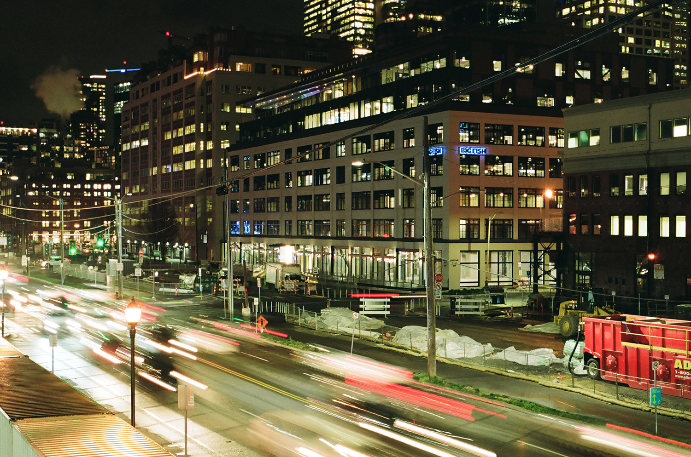
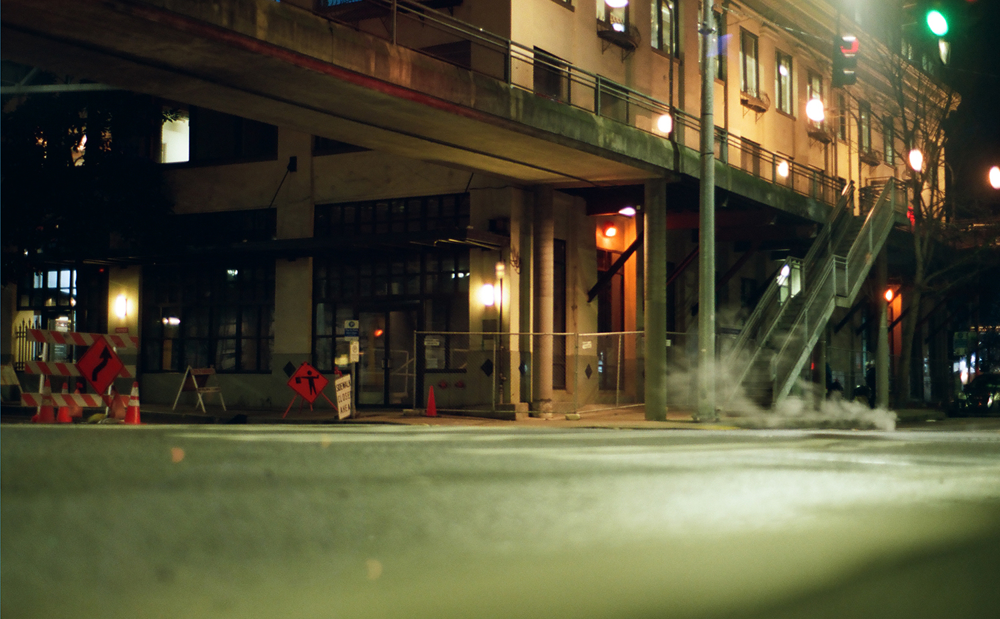
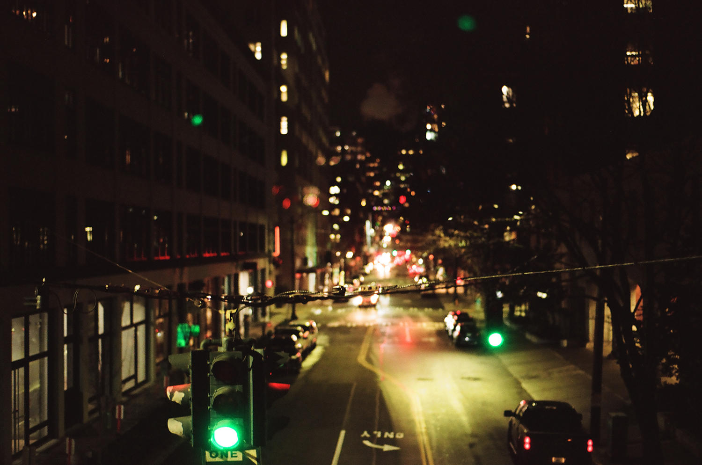

Pictures of Success
Tonight the Streets are Ours
In some ways this almost seems like a scene from another time. I
don't know if there are this many cars and out and about these days. This was taken in
Seattle January 2020. I love when it's possible to show time with a photo like it is here.
All these photos were taken with Kodak Portra 160 film. It's known for being great for taking
photos of people. I don't take photos like that often, but I absolutely love the hues in these night shots. This
following photo is from Mukilteo, WA. I'm not certain what caused the slight blur towards the left side of the photo,
but I love the effect. It may just be because of how long I exposed the film and how bright the light is over there.
I was walking in downtwon Seattle towards the ferry when I took this photo. I walked by and just glanced down the alleyway and the image was striking.

These next two are also from Seattle. I love the narrative quality in them both. I like when a photo tells a story but is also open to interpretation, like there are numerous stories there. The very last shot is one of my favorites that I've taken recently.
 